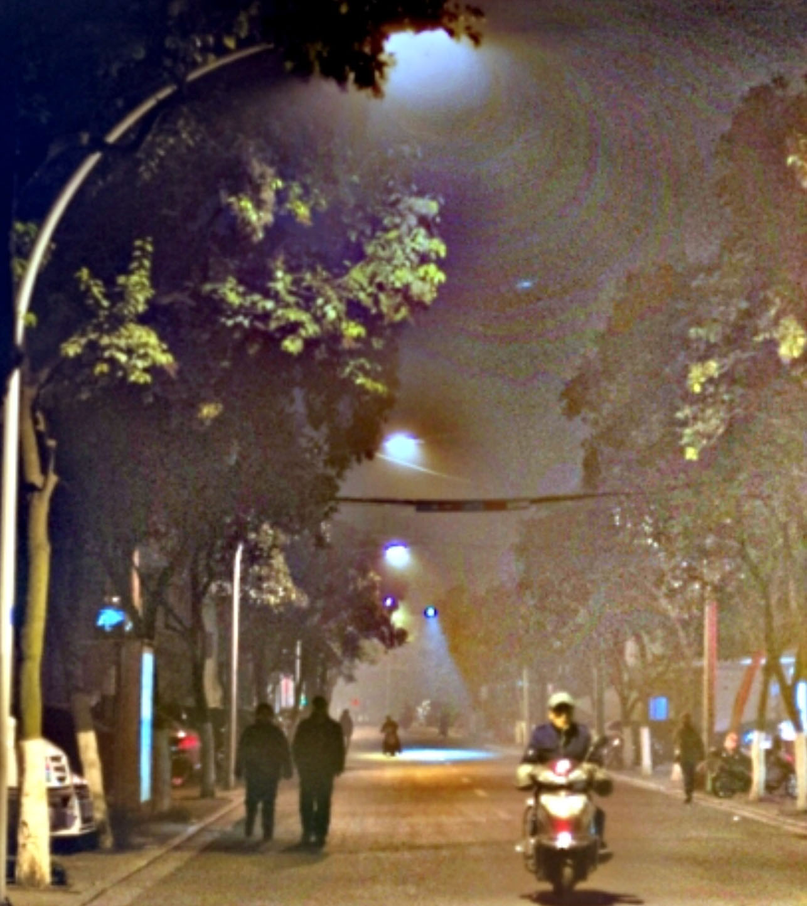
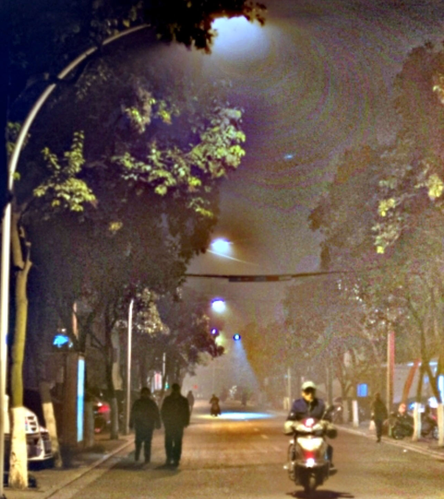
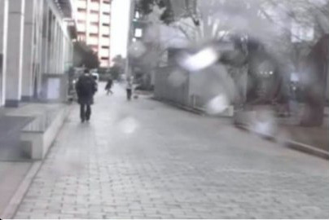
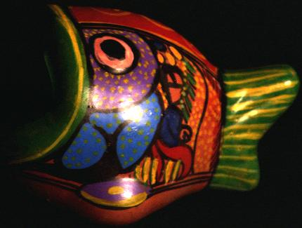
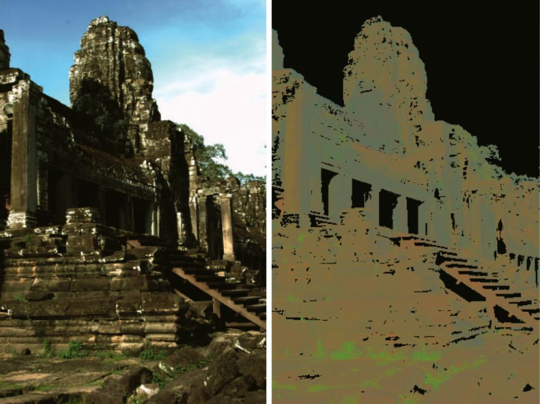
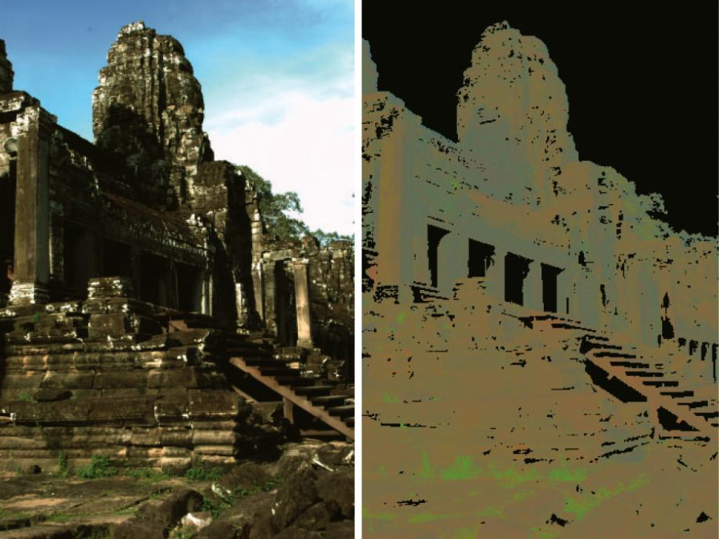
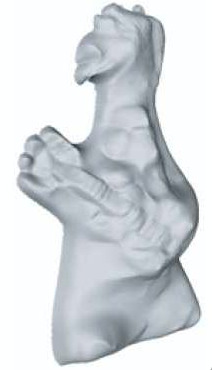
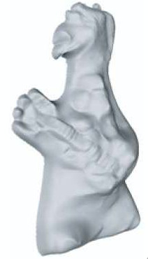
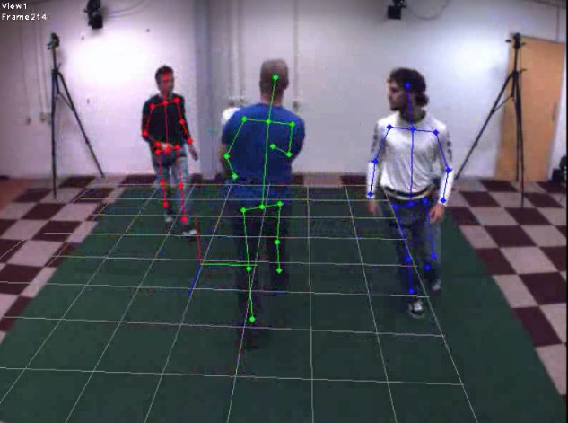
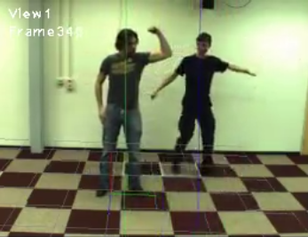

Research:
Below are selected results, for the complete list of publications, see here.


Rain Streak Removal using Layer Priors
Yu Li,
Robby T. Tan, Xiaojie Guo, Jiangbo Lu, Michael
Brown
CVPR, 2016, Las Vegas, USA.
 

|
Nighttime Haze Removal with Glow and Multiple Light Colors Yu Li, Robby T. Tan, Michael Brown |

|
Simultaneous Video Defogging and Stereo Reconstruction Zhuwen Li, Ping Tan, Robby T. Tan, Danping Zhou, Steven Zhiying Zhou and Cheong Loong Fah |


|
A Contrast Enhancement Framework with JPEG Artifacts Suppression Yu Li, Fangfang Guo, Robby T. Tan, Michael Brown |


|
Visibility Enhancement in Bad Weather Robby T. Tan |


|
Adherent Raindrop Detection and Removal Shaodi You, Robby T. Tan, Rei
Kawakami, and Katsushi Ikeuchi |

|
Camera Spectral Sensitivity Estimation from Sky Images
Rei Kawakami, Hongxun Zhou, Robby T. Tan and Katsushi
Ikeuchi |
|
Color Constancy Through Inverse-intensity Chromaticity Space CVPR, 2003, Wisconsin, USA. |
|

|
Robust Highlight Removal
Robby T. Tan, K. Nishino, K. Ikeuchi
|


|
Highlight Removal for Complex Textured Surfaces Robby T. Tan, Katsushi Ikeuchi |
 

|
Consistent Surface Color for Texturing Large Objects in Outdoor Scenes Rei Kawakami, Robby T. Tan, Katsushi Ikeuchi |

 

|
Polarization-based Inverse Rendering Daisuke Miyazaki, Robby T. Tan, Kenji Hara, Katsushi Ikeuchi |


|
Utrecht Multi-Person Motion Benchmark
N.P. van der Aa, X. Luo, G.J. Giezeman, Robby T. Tan, and
R.C. Veltkamp |


|
Pose Recognition of Multiple Persons
X. Luo, Robby T. Tan, R. Veltkamp
|